Diffs and mixed languages
Highlight changes in a patch, and embedded code inside another language.
Review a Python change
This patch replaces a positional result with named fields. Old and new code get independent syntax passes, so removed delimiters or multiline strings do not disturb the highlighting of added code. The custom gutter shows patch-row coordinates and replaces the automatic old/new/marker columns.
#import "@preview/codly:2.0.0" as codly
#codly.new(
```diff-py
@@ -20,3 +20,6 @@
def summarize(values):
- totals = [sum(values), len(values)]
- return totals
+ totals = {
+ "sum": sum(values),
+ "count": len(values),
+ }
+ return totals
```,
diff: if patch-enabled {
(
numbers: patch-numbers,
markers: patch-markers,
added-fill: patch-colors.added,
removed-fill: patch-colors.removed,
meta-fill: patch-colors.meta,
old-offset: patch-old-offset,
new-offset: patch-new-offset,
)
} else { false },
gutters: if patch-custom-gutter {
(codly.gutter-column(
values: row => if row.source-line != none {
"R" + str(row.source-line)
},
align: right,
text: (fill: gray),
),)
} else { auto },
rainbow: patch-rainbow,
width: patch-width,
)Edit & run on your device
The controls supply the example variables. Their definitions are hidden here; Copy code includes the current values and your edits.

Both diff-py and diff,py are valid Codly language tags. The hyphenated fence also works in Typst 0.15; on versions without comma support in fences, use raw(source, block: true, lang: "diff,py").
See codly.diff for patch coordinates and codly.gutter-column for custom columns.
Highlight Python inside a shell script
The shell launches Python through a heredoc, so lines 3–10 need Python highlighting inside a shell block. Without the sublanguage, the shell grammar treats that region as a string.
Each sublanguage has its own delimiter stack. Rainbow coloring skips delimiters in strings and comments, and indentation guides follow leading spaces.
#import "@preview/codly:2.0.0" as codly
#codly.new(
```sh
#!/usr/bin/env bash
python3 - <<'PY'
def summarize(values):
stats = {
"sum": sum(values),
"count": len(values),
}
return {"stats": stats, "items": list(values)}
print(summarize([2, 4, 8]))
PY
echo "Report ready"
```,
sublangs: if embedded-enabled {
(codly.sublang(start: 3, end: 10, lang: embedded-language),)
} else { () },
rainbow: (
enabled: syntax-rainbow,
palette: syntax-palette,
depth-offset: syntax-depth-offset,
),
indent-guides: (
enabled: syntax-guides,
width: syntax-indent-width,
),
number-enabled: syntax-numbers,
width: syntax-width,
)Edit & run on your device
The controls supply the example variables. Their definitions are hidden here; Copy code includes the current values and your edits.

Sublanguage ranges count original source lines, starting at 1. If you insert lines above the Python section, update start and end in the editor.
See codly.sublang, codly.rainbow, and codly.indent-guides for the individual options, or Internals for the rendering pipeline.